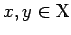
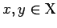
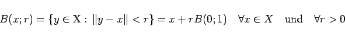

Inhalt Index DeskTop Bronstein

 Funktionalanalysis Normierte Räume Begriff des normierten Raumes
Funktionalanalysis Normierte Räume Begriff des normierten Raumes


Sei  ein Vektorraum über dem Körper Eine Funktion heißt Norm auf dem Vektorraum
ein Vektorraum über dem Körper Eine Funktion heißt Norm auf dem Vektorraum  und das Paar
und das Paar  normierter Raum über dem Körper wenn für beliebige Elemente  und beliebiges
normierter Raum über dem Körper wenn für beliebige Elemente  und beliebiges  die folgenden Eigenschaften, die Axiome des normierten Raumes, erfüllt sind:
die folgenden Eigenschaften, die Axiome des normierten Raumes, erfüllt sind:
Mit Hilfe der Festlegung
kann jeder normierte Raum in einen metrischen so umgewandelt werden, daß die Metrik (12.81) zusätzlich noch die mit der Struktur des Vektorraums verträglichen Eigenschaften
besitzt. Somit stehen in einem normierten Raum sowohl die Eigenschaften eines Vektorraums als auch die eines metrischen Raumes - durch (12.82a) und (12.82b) verträglich aufeinander abgestimmt - zur Verfügung. Daraus ergibt sich, daß man die meisten lokalen auf einen Punkt bezogenen Untersuchungen mit den Einheitskugeln
| (12.83) |
vornehmen kann, da sich
|  | (12.84) |
ergibt. Außerdem sind die Operationen im zugrunde liegenden Vektorraum stetig, d.h., aus
Für konvergente Folgen schreibt man anstelle von (12.53) in normierten Räumen
| (12.86) |